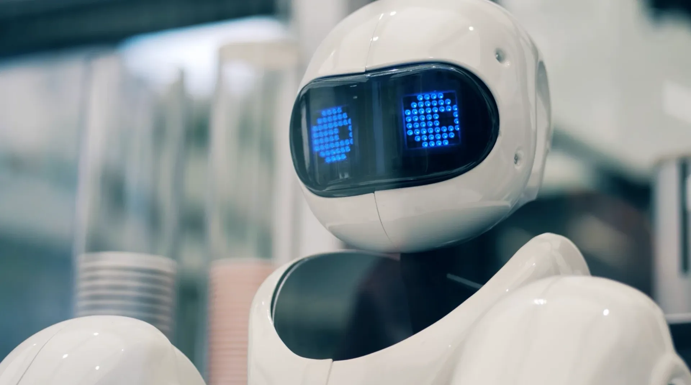
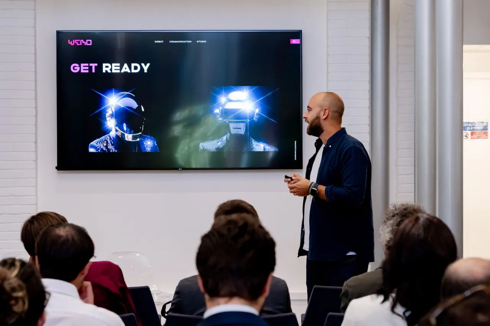
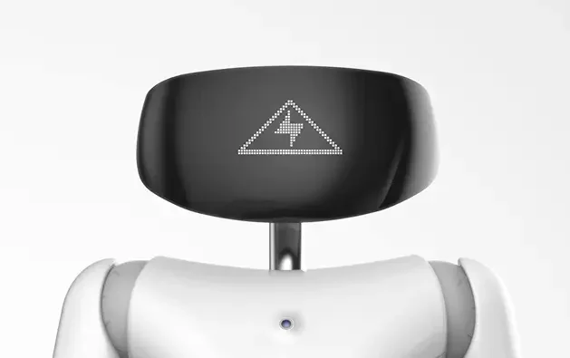
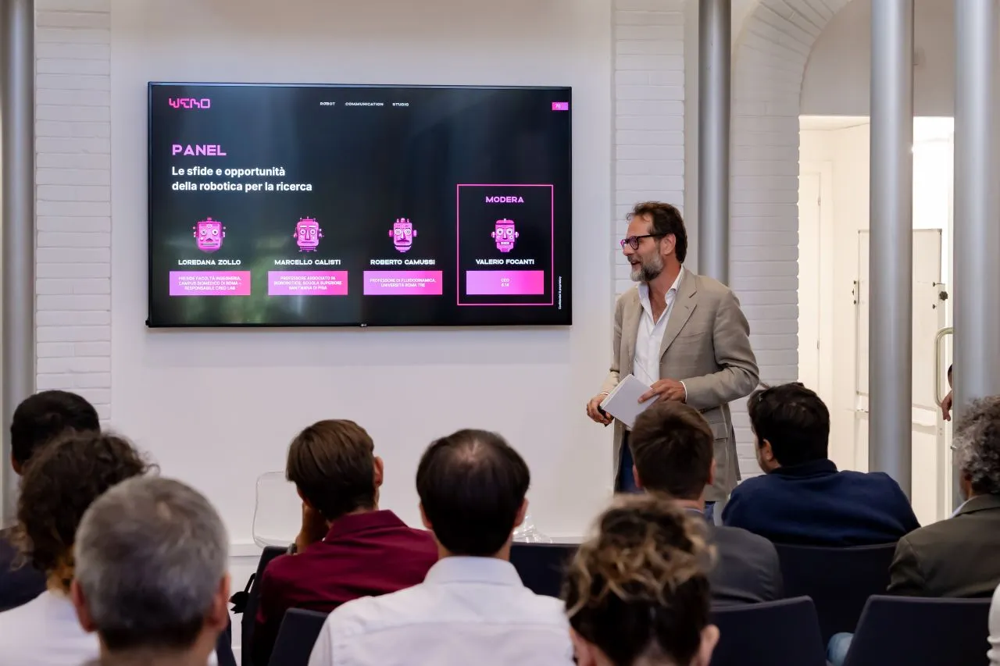
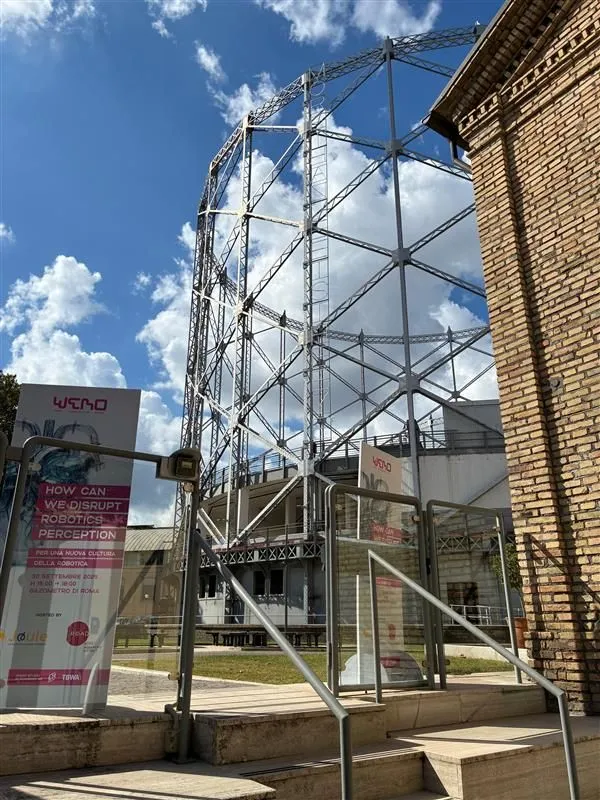
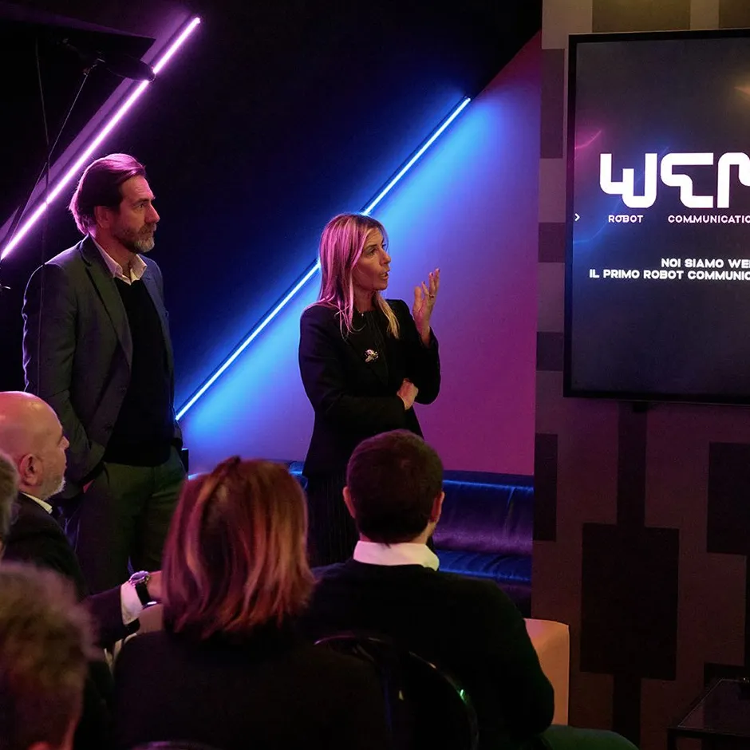

Robotics Intelligence
Ricerca, report e analisi per leggere le trasformazioni della robotica e la percezione delle persone.
Vedi i progetti Diventa partner
Diventa partner

Un ecosistema di partner che esplora la robotica e ne racconta l'evoluzione.
WeRo nasce dall'incontro tra ricerca, business, comunicazione e creatività. Un ecosistema di partner che unisce competenze complementari per esplorare le potenzialità della robotica, interpretarne l'evoluzione e costruire nuove connessioni tra persone e tecnologia.
WeRo nasce dall’incontro tra Omnicom Advertising e 6.14.
Omnicom Advertising
Rete di agenzie di comunicazione del gruppo Omnicom. Ha fondato WeRo insieme a 6.14.
Visita il sito6.14
Creative licensing e comunicazione, Milano. Ha fondato WeRo insieme a Omnicom Advertising.
Visita il sitoVuoi diventare un nostro partner?
Contattaci



Prospettive diverse per un impatto condiviso
La collaborazione tra ricerca, business e creatività ci permette di esplorare la robotica da prospettive diverse. Dall'analisi delle trasformazioni tecnologiche alla creazione di occasioni di confronto, fino allo sviluppo di nuovi linguaggi e identità.
Ricerca, report e analisi per leggere le trasformazioni della robotica e la percezione delle persone.
Vedi i progetti
Eventi, talk e occasioni di confronto che mettono in dialogo ricerca, aziende e pubblico.
Vedi i progetti
Nuovi linguaggi, identità e storytelling per dare voce ai robot e ai progetti di ricerca.
Vedi i progettiReport sull'accessibilità della robotica e sul suo impatto nella vita delle persone.
Scopri il progettoUn evento e un toolkit per avvicinare aziende e pubblico ai temi della robotica.
Scopri il progettoLogo design e identità per la robotica del futuro, nata dalla ricerca IIT. Premiata ai Touchpoint Awards Identity 2026.
Scopri il progettoCome cambiare la percezione dei robot: da macchine a “tools for human beings”.
Scopri il progettoUn appuntamento per portare la cultura robotica fuori dai laboratori.
Scopri il progettoLinguaggio e design per il robot umanoide R1 (da confermare con IIT).
Scopri il progettoCome cambia la percezione dei robot quando smettono di essere macchine e diventano strumenti per le persone.
Scopri il progettoOccasione di confronto con l'Istituto Italiano di Tecnologia.
Scopri il progettoPartecipazione al Tech Transfer Day di Cassa Depositi e Prestiti.
Scopri il progettoIncontro con il Consiglio Nazionale delle Ricerche.
Scopri il progettoUn momento di dialogo su robotica e futuro a Milano.
Scopri il progettoProssimo appuntamento in calendario.
Scopri il progettoLe nostre ricerche su robotica e percezione delle persone, da leggere e scaricare liberamente.
Report sull’accessibilità della robotica e sul suo impatto nella vita delle persone.
Come cambiare la percezione dei robot: da macchine a “tools for human beings”.
Stiamo lavorando alla nuova edizione. Scrivici per riceverla appena esce.
When robotics become care
Come la robotica può prendersi cura delle persone: assistenza, riabilitazione e tecnologie indossabili che restituiscono autonomia nella vita di tutti i giorni.
When robotics meet the world of work
Robot e persone che lavorano fianco a fianco: cosa cambia nelle fabbriche, negli uffici e nelle competenze, e come costruire una collaborazione basata sulla fiducia.
When robots enter our space
Quando i robot escono dai laboratori ed entrano in case, negozi e città: come progettare una convivenza chiara, sicura e comprensibile per tutti.

Vogliamo cambiare la percezione dei robot: da semplici macchine a “tools for human beings”.
Siamo nati per creare un nuovo concetto di comunicazione tra persone, macchine e brand, per dare vita a nuove interconnessioni e nuove comunità.
Ci impegniamo per portare la robotica anche a chi oggi la vede solo come un complesso di codici e bulloni, dando sempre più importanza al linguaggio e alla relazione H2M: una connessione emotiva che è la chiave per progettare i robot e le loro interfacce.
Raccontaci chi sei e su cosa vorresti collaborare: ti ricontatteremo.